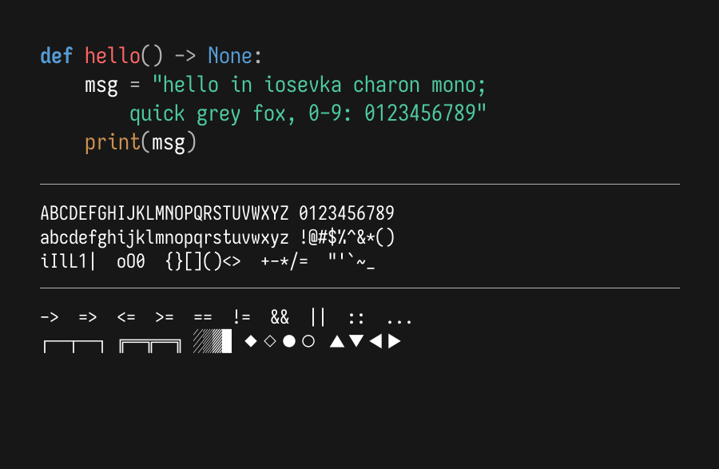

Iosevka Charon is a quasi-proportional font excellent for technical writing and dense UI, based on Iosevka (an open source font project) made by Renzhi Li (aka. be5invis). Iosevka Charon Mono is a true monospace font tuned for coding and terminal use. These font families are unique derivatives of Iosevka by Belleve Invis; built in a manner that makes the resulting fonts Google Fonts compliant.
To contribute, please see github.com/jul-sh/iosevka-charon.
